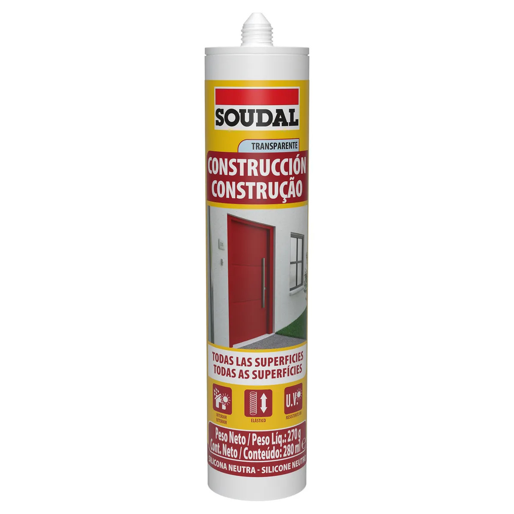

Sellador de silicona

Producto que forma una barrera flexible para sellar juntas, bordes y encuentros entre superficies. Hay formulaciones para baños, cocinas, vidrios y otras aplicaciones; se debe elegir la adecuada para cada material.